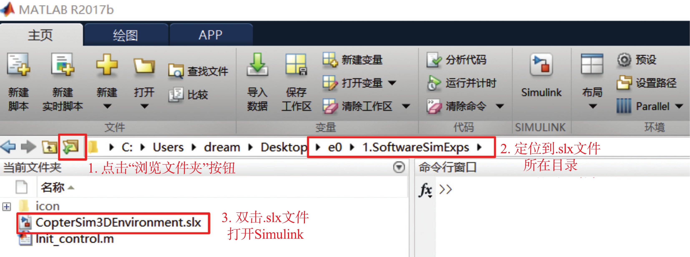

2. 控制器设计与仿真平台¶
为了提高多旋翼飞行器的控制器设计效率，本书提供了一套基于 Simulink/FlightGear的较为完整逼真的仿真环境，环境展示例程文件如下图所示，源代码主文件见“ e01. SoftwareSimExpsCopterSim3DEnvironment.slx ”。
图 3.5 环境展示例程文件示意图¶
下面介绍正确地打开本书给定的.slx 例程文件的步骤：
（1）通过 Windows 桌面快捷方式或者开始菜单，打开 MATLAB 主程序；（2）单击 MATLAB 主界面的“浏览文件夹”按钮，将当前路径定位到想要打开的.slx 文件所在目录；图 3.6 正确打开.slx 例程文件的方法¶
（3）在上图左下侧的“当前文件夹”窗口中，双击需要打开的.slx 文件即可。
按上述步骤打开 “CopterSim3DEnvironment.slx” 文件后， 可以看到Simulink 软件在环仿真系统例子。
图 3.7 Simulink 软件在环仿真系统例子¶
该仿真系统包含三个子系统模块：“控制器”子系统、“多旋翼模型”子系统和“FlightGear 接口”子系统，其中的一些关键特性总结如下：
（1）“控制器”子系统模块在输入/输出与反馈信号的形式上是与真实的自驾仪硬件保持一致的。例如，本例的输入是模拟来自遥控器的俯仰角、滚转角、偏航角和高度控制指令；输出是给多旋翼模型的电机 PWM 信号。（2）控制器子系统本身使用传感器估计状态(姿态、角速度、位置、速度等状态信息）来实现多旋翼的稳定姿态控制。（3）"多旋翼模型"子系统与真实的多旋翼的输入/输出接口保持一致，输入是由 Pixhawk 自驾仪定义的 八 个电机(多旋翼模型会根据选定机型选择实际使用的电机数目）的 PWM 控制信号(数据范围是 1000∼2000 微秒，对应了 0∼1 的油门指令），输出是各种传感器的数据。（4）"FlightGear 接口"子系统，可以将飞行信息传输到 FlightGear 中，逼真地展现多旋翼飞行器当前的飞行轨迹与姿态信息。
2.1. 控制器¶
"控制器"子系统的内部结构如下图。本例程展示的是一个简单的俯仰和滚转姿态的控制器。它会接收遥控器的控制输入，将多旋翼飞行器控制到指定的俯仰和滚转角度。
图 3.8 控制器内部结构¶
第 1∼5 号输入接口对应了遥控器的五个通道的输入("ch1"∼"ch5"）；第 6∼8 号输入接口对应了来自陀螺仪传感器的滚转、俯仰和偏航方向的角速度("p"、"q"和“r")；第 9∼10 号接口对应了滚转角和俯仰角(“phi"和“theta")。四旋翼飞行器的整个控制器模块的计算过程大体分为五个步骤：
（1）输入接口模块：接收遥控器信号和飞机状态观测信号；注解
在实际自驾仪系统中，这些信号一般未自状态估计相关模块（例如，传感器原始数据、卡尔曼滤波器、互补滤波器等）；在控制器设计的软件在环仿真阶段，为了简便起见，可以先用多旋翼模型输出状态的真值替代。
（2）遥控信号处理模块：将遥控器的五个通道信号映射为期望的滚转和俯仰角度；（3）姿态控制器模块：计算期望输出力和力矩大小来控制多旋翼飞行器姿态到期望角度；（4）电机控制输出分配：模块将力和力矩的控制量映射为四个电机的油门控制量(一般是 1000 ~2000 之间)；（5）输出接口模块：将剩余的四维控制量补齐并映射出 PWM 调制信号(一般是 1000∼2000 微秒)，构成八维(Pixhawk 自驾仪硬件上有八个 PWM 的输出口)的 PWM控制信号作为输出信号。注解
这里 1000∼2000 对应的是高电平的持续时间（单位为微秒），而遥控器单个 PWM 信号的周期一般为 20 毫秒（50Hz），所以用万用表测量的 PWM 信号占空比范围通常是 0.05∼0.1 而不是 0∼1
2.2. 多旋翼模型¶
“多旋翼模型"子系统的内部结构如下。该模块模拟真实的多旋翼系统，以电机的 PWM 控制量为输入，以多旋翼的状态和传感器信息为输出。
图 3.9 多旋翼模型子系统内部结构¶
整个“多旋翼模型"子系统又包含如下七个主要模块：
（1）电机模块：模拟电机动态；（2）力和力矩模块：模拟螺旋桨拉力、机身气动力、自身重力以及地面支撑力等所有的外部力和力矩；（3）刚体运动动态模块：计算多旋翼的速度、位置、姿态等运动学状态；（4）环境模块：计算环境数据，例如重力加速度、空气密度、风干扰和地磁场等；（5）故障模块：主要用于注入模型不确定(质量和转动惯量有关的)和故障数据；（6）电池模块：模拟电池的放电过程；（7）输出接口模块：将数据打包成需要的格式。
控制器和多旋翼模型的参数都存储在一个初始化脚本“ e0/1.SoftwareSimExps/Init_control.m "中。这个脚本在开始 Simulink 仿真时会自动执行以将所有参数导入工作空间，保证仿真正常运行。读者可以在“CopterSim3DEnvironment.slx"项目中，依次单击 Simulink 菜单栏的“File"-“Model Properties"-“Callbacks"- “InitFcn"选项。
图 3.10 调用“Init control.m"脚本表 3.1¶
多旋翼模型需要用到的所有参数都存储在文件“ e01.SoftwareSimExpsiconInit.m "中。这个文件在执行 “Init_control.m” 脚本的时候会被自动调用，并将模型参数(自动运行 “icon/Init.m"脚本)自动导入工作空间，保证仿真正常运行。
2.3. FlightGear 接口¶
FlightGear 接口模块有三个输入分别对应：多旋翼位置，多旋翼姿态欧拉角和电机的 PWM 信号。该模块会自动向本地的 FlightGear 相关接口发送多旋翼飞行器的飞行数据，打开 FlightGear 之后就能在三维场景中看到多旋翼飞行器的飞行状态。运行步骤如下：